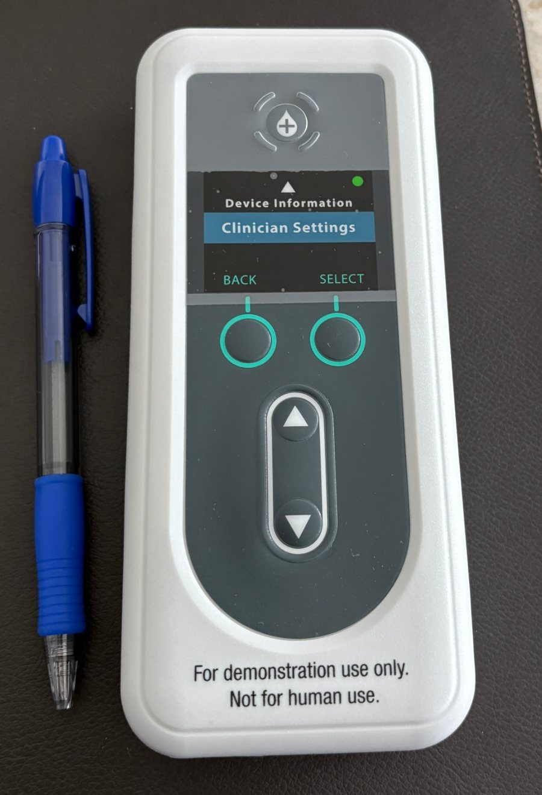

Doença de Parkinson
Novidades no tratamento da doença de Parkinson
A levodopa continua sendo o principal medicamento para a doença de Parkinson. Nas fases avançadas, quando o efeito dos comprimidos passa a oscilar ao longo do dia, já existem formas de manter o medicamento agindo de modo contínuo.
O que é a doença de Parkinson
A doença resulta da perda progressiva de neurônios que produzem dopamina. Os sintomas principais são lentidão dos movimentos, tremor em repouso, rigidez e, com o tempo, alterações do equilíbrio e da marcha. São comuns também sintomas não motores, como intestino preso, perda do olfato e alterações do sono e do humor.
Quando os comprimidos deixam de funcionar adequadamente
Os medicamentos orais, em especial a levodopa, são usados há mais de 50 anos e controlam bem os sintomas por muitos anos. Com a progressão, muitos pacientes passam a ter flutuações: períodos de bom controle se alternam com períodos de lentidão e travamento, às vezes com movimentos involuntários (discinesias). Para esses casos há outras opções:
- Estimulação cerebral profunda ("marcapasso cerebral"): eletrodos implantados por cirurgia que regulam os circuitos do movimento.1,2
- Ultrassom focalizado de alta intensidade: procedimento sem cortes, guiado por ressonância, para casos selecionados, em geral com sintomas mais intensos de um lado do corpo.3
- Levodopa em infusão contínua, descrita abaixo.
Levodopa em infusão contínua

Em vez de doses espaçadas, a levodopa é administrada ao longo do dia por uma pequena bomba portátil, o que deixa seu nível no sangue mais estável. Há duas formas: um gel aplicado no intestino por meio de uma sonda,4 e uma formulação mais recente aplicada sob a pele por uma cânula fina (foslevodopa-foscarbidopa), aprovada pela Anvisa em 2026. No principal estudo da forma subcutânea, os pacientes ganharam em média cerca de 1 hora e 45 minutos a mais por dia com bom controle dos sintomas, em comparação com a levodopa oral.5 Reações no local da infusão foram o efeito adverso mais comum e exigem cuidados com a pele.5,6
A indicação é para pacientes em fase avançada, com flutuações importantes, em que o ajuste dos comprimidos já não é suficiente.
Antes de iniciar
A escolha entre essas terapias, o ajuste de doses e o acompanhamento exigem avaliação por neurologista com experiência em distúrbios do movimento. Cada opção tem indicações, contraindicações e riscos próprios.
Referências
- Deuschl G, Schade-Brittinger C, Krack P, Volkmann J, Schäfer H, Bötzel K, et al. A randomized trial of deep-brain stimulation for Parkinson's disease. N Engl J Med. 2006;355(9):896-908. doi:10.1056/NEJMoa060281
- Schuepbach WM, Rau J, Knudsen K, Volkmann J, Krack P, Timmermann L, et al. Neurostimulation for Parkinson's disease with early motor complications. N Engl J Med. 2013;368(7):610-22. doi:10.1056/NEJMoa1205158
- Martínez-Fernández R, Máñez-Miró JU, Rodríguez-Rojas R, Del Álamo M, Shah BB, Hernández-Fernández F, et al. Randomized trial of focused ultrasound subthalamotomy for Parkinson's disease. N Engl J Med. 2020;383(26):2501-13. doi:10.1056/NEJMoa2016311
- Olanow CW, Kieburtz K, Odin P, Espay AJ, Standaert DG, Fernandez HH, et al. Continuous intrajejunal infusion of levodopa-carbidopa intestinal gel for patients with advanced Parkinson's disease: a randomised, controlled, double-blind, double-dummy study. Lancet Neurol. 2014;13(2):141-9. doi:10.1016/S1474-4422(13)70293-X
- Soileau MJ, Aldred J, Budur K, Fisseha N, Fung VS, Jeong A, et al. Safety and efficacy of continuous subcutaneous foslevodopa-foscarbidopa in patients with advanced Parkinson's disease: a randomised, double-blind, active-controlled, phase 3 trial. Lancet Neurol. 2022;21(12):1099-109. doi:10.1016/S1474-4422(22)00400-8
- Chaudhuri KR, Bergmans B, Freire-Alvarez E, Hopes L, Kern DS, Kirsner RS, et al. Considerations for initiation and maintenance of foslevodopa/foscarbidopa for advanced Parkinson's disease. Mov Disord Clin Pract. 2026;13(7):1601-11. doi:10.1002/mdc3.70489
Conteúdo informativo, que não substitui a avaliação médica individual. Responsável técnico: Dr. Guilherme Riccioppo, neurologista, CRM-SP 107200, RQE 35373. Atualizado em novembro de 2026.
Leia também: Tratamento precoce da doença de Alzheimer